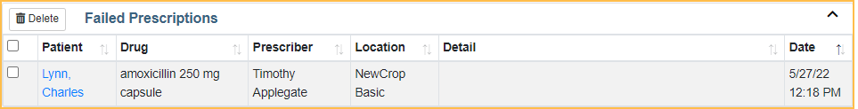

Report a Failed or Missing Prescription in NewCrop eRx
In the NewCrop eRx / Prescription interface, click the Tasks tab. At the bottom is a Failed Prescriptions list.
If a prescription failed to transmit electronically or a pharmacy or patient claims to have not received it, first research the issue. Follow the steps below to report the missing or failed prescription.
Criteria to research a missing or failed prescription:
- It must be electronically transmitted. Printed and faxed prescriptions are not tracked.
- It must be no more than 5 days from the write date of the prescription.
- Mail order prescriptions: Allow 72 hours from transmission before reporting a prescription as failed or missing. Mail order pharmacies have 72 hours to update their database with prescriptions.
- In the NewCrop eRx window, Compose Rx tab, click the Edit dropdown.
- Click Detail.
- Scroll to the bottom. In the Prescription History section, any Failure will be noted in the status column.
- An Action of ERx is required for a prescription to be marked as Failure. Printed or Faxed prescriptions will not be marked as Failure.
- If the status is marked Failure, the prescription may be missing. Proceed to steps to Report a Failed Transmission.
- If the status is marked Verified, the prescription may be missing. Proceed to steps to Report a Missing Prescription.

Report a Failed Transmission
Click Report Failed Rx. When an explanation or outcome has been determined for the failed transmission, an Open Dental eRx team member will notify the office via phone.
Report a Missing Prescription
If a prescription status is Verified, but the pharmacy or patient claims there is no record of the prescription, the prescription should be reported as missing.
- Click Report Missing Rx..
- Fill in the two required fields:
- Click Send to report it. When an explanation or outcome has been determined for the missing prescription, an Open Dental eRx team member will notify the office via phone.